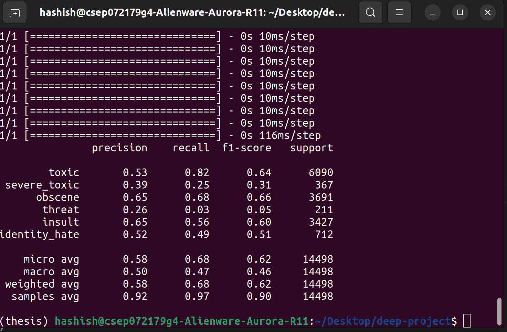
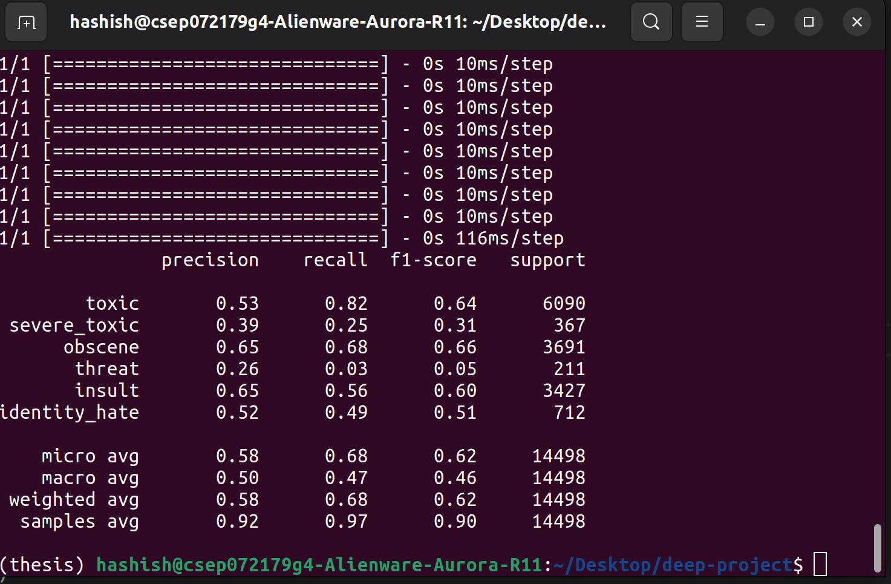

Toxic Comments Classifier
- Sherif Wessa
- Mohamed Hashish
Problem Statement
Toxic comments encompass a wide range of harmful content, including abusive language, insults, and offensive remarks meant to harass or threaten others. This issue has led to the discouragement of many individuals from openly sharing their ideas and opinions due to concerns about receiving hate comments, which, in turn, negatively impacts their mental and emotional well-being. The primary issue we confront is the effective classification and detection of toxic comments on social media and online platforms.
Dataset
Input/Output Examples
State of the art
Orignial Model from Literature
Three different models using TensorFlow to address the challenge:
- MODEL I: a baseline approach that utilized a Bidirectional Long Short-Term Memory (LSTM) network with embeddings trained from scratch.
- MODEL II: a variation of the baseline approach that incorporated Glove's pre-trained embeddings with the Bidirectional LSTM architecture.
- MODEL III: the well-known BERT model, which is capable of producing state-of-the-art results on a range of NLP tasks including text classification.
Baseline Model Results:
Proposed Updates
Update #1: Trying different Architectures
The original baseline model used a Bidirectional LSTM model with GloVe word embeddings. The first proposed update included an GRU model combined with a CNN model without GloVe word embeddings, and then we introduced a new update which is combining an LSTM model with a CNN model which turned out to be of better accuracy and results.
Update #2: Updating Hyperparameters
In the baseline model, the hyperparameters were changed frequently to see how this would change the f1 score. Also, when we introduced new architectures such as: CNN, GRU, CNN-LSTM, AND CNN-GRU, we changed the hyperparameters to see how this would affect the f1 score. The hyperparameters that were changed are: the number of epochs, the batch size, the learning rate, and the optimizer. The best result achieved the LSTM model with Epoch = 10, learning rate = 0.001, optimizer = Adam, and average of F1 Score= micro.
Results
 

Technical report
Here you will detail the details related to training, for example:
- Programming framework: Python, TensorFlow, Keras, and nltk.
- Training hardware: Local (Processor: Intel® Core™ i9-10900F CPU @ 2.80GHz x 20, Graphics: NVIDIA Corporation TU104 [GeForce RTX 2080 SUPER] / NVIDIA Corporation TU104 [GeForce RTX 2080 SUPER]).
- Training time: minimum of 15 minutes execpt BERT Model whose minimum time is 2 hours.
- Number of epochs: varies from 5 to 10.
- Time per epoch: minimum of 4:30 minutes while Bert takes 36 minutes/epoch.
- BERT model requires high computational power
Conclusion
After trying different architectures and hyperparameters, we found out that the hyperparameters that were used in the original baseline model weren't the best for our problem statement. Upon changing the hyperparameters, we found out that the highest validation accuracy was acheived by the LSTM (0.96), and the second highest validation accuracy was the CNN model that we introduced (0.94). What we learned from these experiments is that it was our first time to combine different architectures together, and we also learned how to use virtual environments to run our code on the GPU. For future work, we would like to try different architectures and hyperparameters to see if we can get a better validation accuracy, and we want to have a chance to change the hyperparameters of the BERT model since we were limited by time as it required half an hour for running a single epoch.